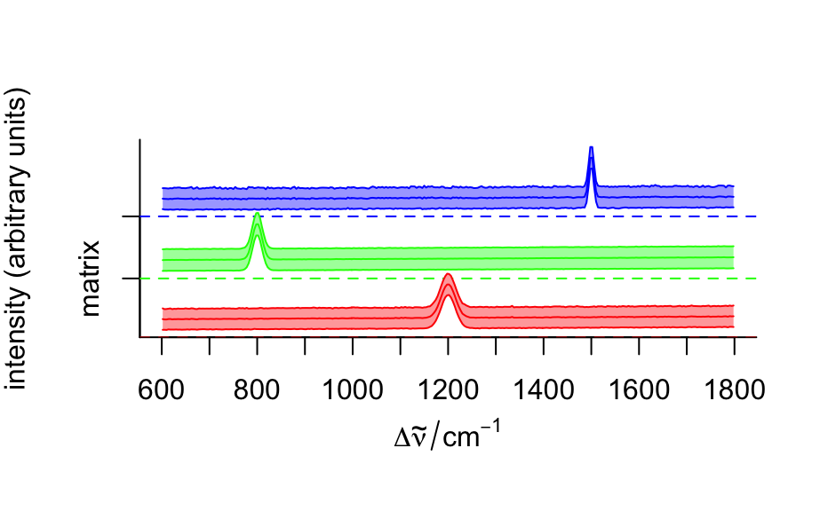
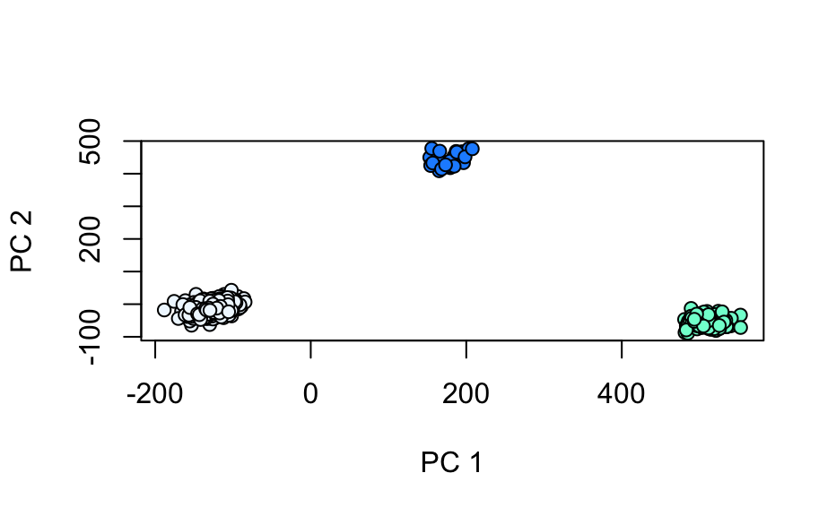

This is a synthetic data set intended for testing and demonstration.
fauxCell
The object contains 875 Raman-like spectra, allocated to three groups/regions in column region: the matrix/background, the cell and the cell nucleus. Each spectrum is composed of 300 data points. The spectrum of each region is unique and simple, with a single peak at a particular frequency and line width. Poisson noise has been added. The data is indexed along the x and y dimensions, simulating data collected on a grid.
The data set resembles the `chondro` data set but is entirely synthetic.
Claudia Beleites, Bryan A. Hanson
fauxCell#> hyperSpec object #> 875 spectra #> 4 data columns #> 300 data points / spectrum #> wavelength: Delta * tilde(nu)/cm^-1 [numeric] 602 606 ... 1798 #> data: (875 rows x 4 columns) #> 1. x: x position [numeric] -11.55 -10.55 ... 22.45 #> 2. y: y position [numeric] -4.77 -4.77 ... 19.23 #> 3. region: [factor] matrix matrix ... matrix #> 4. spc: intensity (arbitrary units) [matrix, array300] 12 178 ... 81# Plot mean spectra FCgrps <- aggregate(fauxCell, fauxCell$region, mean_pm_sd) plotspc(FCgrps, stacked = ".aggregate", col = c("red", "green", "blue"), fill = ".aggregate")mapcols <- c(cell = "aquamarine", matrix = "aliceblue", nucleus = "dodgerblue") plotmap(fauxCell, region ~ x * y, col.regions = mapcols)loadings <- decomposition(fauxCell, t(pca$rotation), scores = FALSE) plot(loadings[1 : 5], stacked = TRUE)plot(pca$x[,2], pca$x[,3], xlab = "PC 1", ylab = "PC 2", bg = mapcols[fauxCell$region], col = "black", pch = 21)